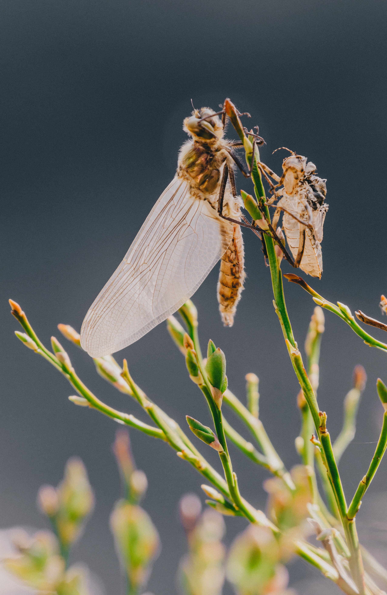

Human. Hmong. Activist. Engineer.
I'm Jacy. I spend time thinking about systems, data, the environment, as well as food experiences, cartoons and . I am a lover of insects, plants and other animals. 
Photo by Siim Lukka on Unsplash